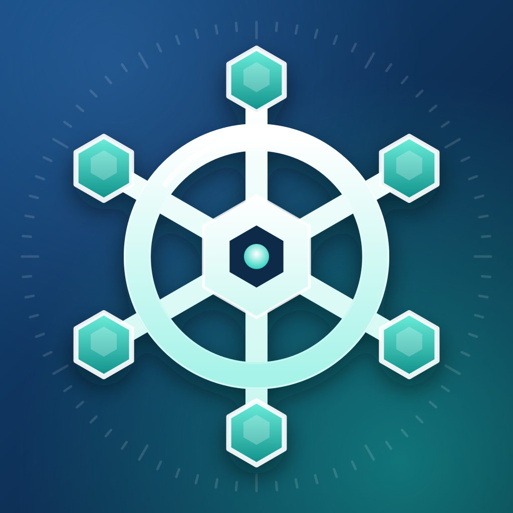

Privacy Policy
Effective November 7, 2026
iPhone and iPad: what the app stores, and where
- Cluster settings (names, server addresses, colours, safety options) are stored on your device, in the app’s own container.
- Credentials (tokens, client certificates and keys, Prometheus tokens) are stored in the iOS Keychain on your device. If you turn on iCloud Sync for a cluster, that cluster’s credentials are synced by Apple’s iCloud Keychain, which is end-to-end encrypted. Sync is off by default.
- Shared kubeconfig files: when you share a file to Wheelhouse, the share extension keeps it in the Keychain on your device for at most one hour, until the app imports it.
- Widgets and alerts use a summary cached on your device. Notifications are generated on the device itself.
iPhone and iPad: network connections
Wheelhouse connects only to the Kubernetes API servers and Prometheus addresses that you add. It does not contact any server run by the developer, and it contains no third-party analytics, advertising or crash-reporting SDKs.
Wheelhouse for Mac
The Mac app follows the same principles: no accounts, no analytics, no advertising and no tracking, and nothing is sent to a server run by the developer. Three things are specific to the Mac.
- Update checks. The app checks for updates about once a day (you can turn this off in Settings, Updates). The check requests a small update feed from GitHub Pages, and an update is downloaded from GitHub Releases. As with any web request, GitHub receives your IP address and the app version in the request. No cluster information is included.
- Ask AI (First Mate). The app contacts the Anthropic API only when you use First Mate, and only with your own API key. What you ask, and the cluster information you let it read to answer, is sent to Anthropic under your own account and terms. The key is stored in the Mac’s keychain on this device only. If you never use First Mate, the app never contacts Anthropic.
- Local-only data. Cluster settings, window layout, history, command output and credentials stay on your Mac, in the app’s folders and keychain. Clusters you choose to sync appear through iCloud Keychain exactly as on iPhone and iPad.
The Mac app also connects to the Kubernetes API servers and Prometheus addresses you add, and runs the tools you have installed (such as kubectl and your cloud command-line tools) on your behalf.
Vulnerability scanning (Survey), optional. Survey reads Trivy Operator reports from your clusters without any other network use. Scanning images on your Mac is optional and starts only when you press Scan Now (or choose to scan on a schedule). It uses the trivy you installed, or a pinned Trivy release that the app downloads only after you approve it: the approval sheet shows the file name, the address, the size and the SHA-256, and the download is checked against that checksum before it is used. When you scan, Trivy downloads its vulnerability database from its own public registry (at most once a day) and, for images in private registries, your Mac contacts those registries with the credentials you already use for them. If you turn on “Use the cluster’s imagePullSecrets” for a cluster, the app reads that cluster’s pull secrets and gives Trivy only the matching registry, in a temporary private folder that is deleted when the scan ends. None of this goes to a server run by the developer. If you never scan, none of it happens.
Face ID (iPhone and iPad)
App Lock uses Face ID or Touch ID through iOS. The app only learns whether authentication succeeded; it never has access to biometric data.
Diagnostics
When a connection fails, the app can create a diagnostics report with tokens, keys and certificates removed. It is only shared if you choose to copy or share it yourself.
Children
Wheelhouse is a tool for managing computer infrastructure and is not directed at children.
Changes
If this policy changes, the new version will be posted on this page with a new effective date.
Contact
Questions about privacy: open an issue on GitHub.